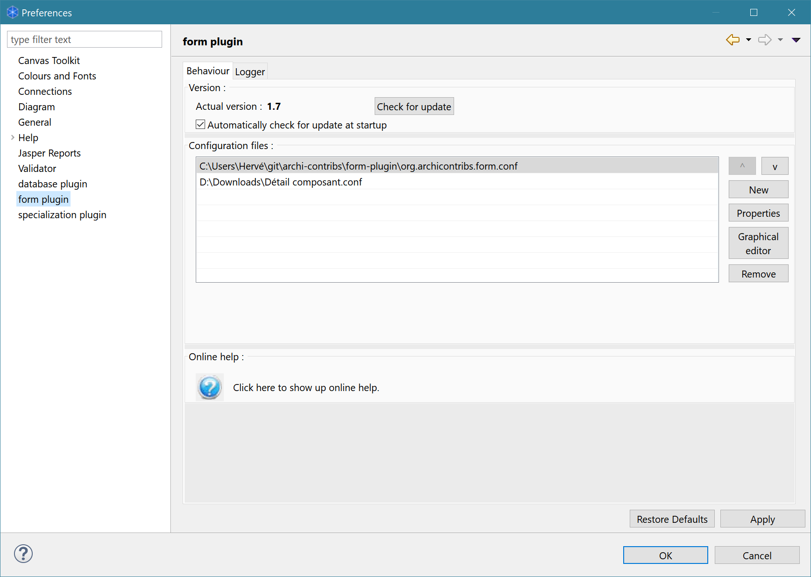
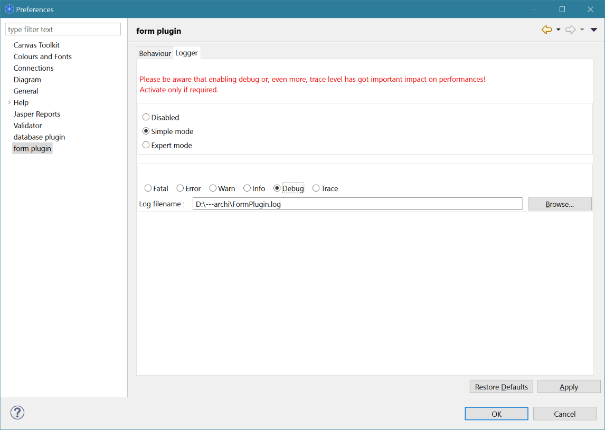
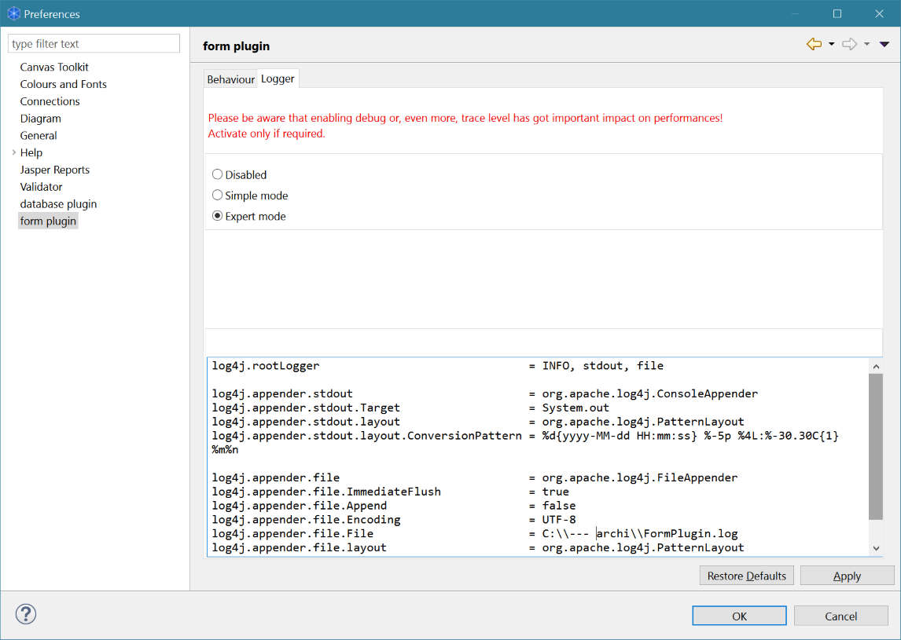

Form plugin
Configure the plugin
The form plugin can be configured using its preference page that can be accessed through Archi menu "edit" / "preferences".
Two tabs are available on the preference page:
Behaviour

The plugin is able to update itself using the latest version from GitHub. This update can be done manually by a click on the "check for update" button.
It can also automatically check for new version when Archi starts.
If you are behind a proxy, you must append the following lines to your "archi.ini" file:
-Dhttp.proxyHost=<proxy name or IP>
-Dhttp.proxyPort=<proxy port>
-Dhttp.proxyUser=<username if proxy authentication is required>
-Dhttp.proxyPassowrd=<password if proxy authentication is required>
-Dhttps.proxyHost=<proxy name or IP>
-Dhttps.proxyPort=<proxy port>
-Dhttps.proxyUser=<username if proxy authentication is required>
-Dhttps.proxyPassowrd=<password if proxy authentication is required>
The plugin uses configuration files to determine which form to show up regarding the selected objects in Archi.
Each configuration file can contain several forms, so it is up to you to store your forms definitions in a single configuration file or organise them into separate configuration files.
You can access the online help (like this page) using the help button on the preference page or using Archi's menu "Help" / "Help contents".
Logger
You may activate the logger to obtain information like error or debug messages.

The simple mode defines a standard configuration when messages are sent to Archi's standard output (accessible using the "-consoleLog" option) and to the specified log file. You may choose the level of los you need:
- fatal
- error
- warn
- info
- debug
- trace
Please be aware that the debug and even more, the trace level have got an impact on the plugin performance (of course, when not in the plugin, there is no impact on Archi performance).

The expert mode allows you to specify the Log4J configuration.
Please note hat this mode is for experts only. Please use it only if you know what you're doing.